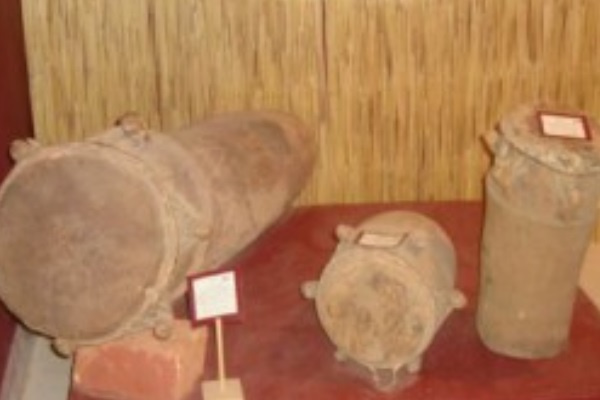

🇧🇫😀😀😀🤼♀️🤼♀️😀😁 MUSEE DE LA MUSIQUE A OUAGADOUGOU😁😀🤼♀️🤼♀️😀😀😀>🇧🇫
🇧🇫 🇧🇫🎶DESCRIPTION DU Musée de la Musique de Ouagadougou 🎶🇧🇫 🇧🇫
Un tourbillon de sons, de rythmes et de merveilles africaines ! Entrez, ouvrez grand vos oreilles et laissez vos pieds battre la mesure : vous êtes au Musée de la Musique de Ouagadougou ! Ici, chaque salle est une scène, chaque instrument est un voyage, chaque vibration est une fête.
Tambours sacrés du Sahel, balafons du pays Gourounsi, flûtes peules, kora mandingue, sanza magique… le musée est un kaléidoscope sonore où les cultures du Burkina Faso se rencontrent, se répondent et explosent en une joyeuse symphonie !
Ce musée n’est pas un simple conservatoire, mais un lieu vivant où la musique respire. Des ateliers invitent à toucher, à essayer, à ressentir. Parfois, un musicien traditionnel improvise une mélodie, et soudain, l’espace entier s’anime. Les visiteurs, d’abord spectateurs, deviennent à leur tour acteurs de cette grande fresque sonore.
Un Hommage aux Gardiens de la Mémoire Dans une salle dédiée, des portraits de griots et de maîtres musiciens semblent veiller sur les lieux. Leurs regards, graves ou souriants, rappellent que la musique n’est pas seulement un art, mais une langue, une histoire, une âme collective. En sortant, on emporte avec soi bien plus que des souvenirs : l’écho persistant d’un patrimoine qui continue de battre au rythme du Burkina.
🇧🇫 🇧🇫🎶🎶HISTORIQUE DE LA MUSEE DE LA MUSIQUE🎶🎶🇧🇫 🇧🇫
### *Origine et Création* - Le musée a été créé en *1998* sous l'impulsion du *ministère de la Culture* du Burkina Faso, avec le soutien de partenaires internationaux. - Il a été conçu pour mettre en valeur les traditions musicales burkinabè et ouest-africaines, souvent transmises oralement et menacées par la modernisation.### *Objectifs* - *Conserver* les instruments traditionnels et les archives sonores. - *Promouvoir* la diversité musicale du Burkina Faso et de l'Afrique de l'Ouest. - *Sensibiliser* le public, notamment les je- Sensibiliser* le public, notamment les jeunes, à l’importance du patrimoine musical. - *Servir de lieu de recherche* pour les ethnomusicologues et les artistes.
### *Collections et Activités* - Le musée abrite une collection d’*instruments traditionnels* (balafons, djembés, koras, flûtes, etc.) provenant des différentes ethnies du Burkina (Mossi, Bobo, Lobi, Peul, etc.). - Il propose des *expositions, des **ateliers de fabrication d’instruments, des **conférences* et des *spectacles live*. - Des *enregistrements audio* de musiques et chants traditionnels y sont également archivés.
### *Évolution et Défis* - Le musée a connu des difficultés financières et logistiques au fil des années, limitant parfois son rayonnement. - Des projets de modernisation et de numérisation des archives ont été envisagés pour préserver ce patrimoine. - Il reste un lieu important pour les artistes locaux et les chercheurs, bien que moins médiatisé que d’autres institutions culturelles à Ouagadougou.
### *Importance Culturelle* Le Musée de la Musique de Ouagadougou joue un rôle clé dans la sauvegarde des traditions musicales du Burkina Faso, un pays où la musique est profondément liée aux rites sociaux, religieux et historiques. Si vous souhaitez des détails supplémentaires sur des expositions ou des événements précis, n'hésitez pas à demander !
Musée National de la Musique | Ouagadougou, Burkina Faso
© 2024 - Tous droits réservés
 |
 |
|---|